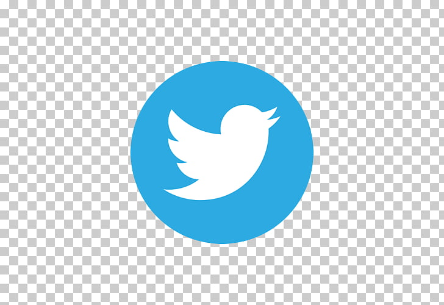

Facebook

Facebook (pronunciado /ˈfeɪsbʊk/ ( escuchar), NASDAQ: FB) es una compañía de origen estadounidense que ofrece servicios de redes sociales y medios sociales en línea con sede en Menlo Park, California. Su sitio web fue lanzado el 4 de febrero de 2004 por Mark Zuckerberg, junto con otros estudiantes de la Universidad de Harvard y compañeros de habitación, Eduardo Saverin, Andrew McCollum, Dustin Moskovitz y Chris Hughes. Está disponible en español desde febrero de 2008.4 Facebook es una plataforma que funciona sobre una infraestructura de computación basada principal y totalmente en sistemas
Twitter

Twitter (pronunciación AFI [ˈtwɪtər]) (TWTR)5 es un servicio de microblogueo, con sede en San Francisco, California, EE. UU., con filiales en San Antonio (Texas) y Boston (Massachusetts) en Estados Unidos. Twitter, Inc. fue creado originalmente en California, pero está bajo la jurisdicción de Delaware desde 2007.6 Desde que Jack Dorsey lo creó en marzo de 2006, y lo lanzó en julio del mismo año, la red ha ganado popularidad mundial y se estima que tiene más de 300 millones de usuarios, generando 65 millones de tuits al día y maneja más de 800 000 peticiones de búsqueda diarias. Ha sido denominado como el «SMS de Internet».7
Instagram

Instagram es una aplicación y red social de origen estadounidense, propiedad de Facebook, cuya función principal es poder compartir fotografías y vídeos con otros usuarios. Está disponible para dispositivos Android, iOS y Windows 10.